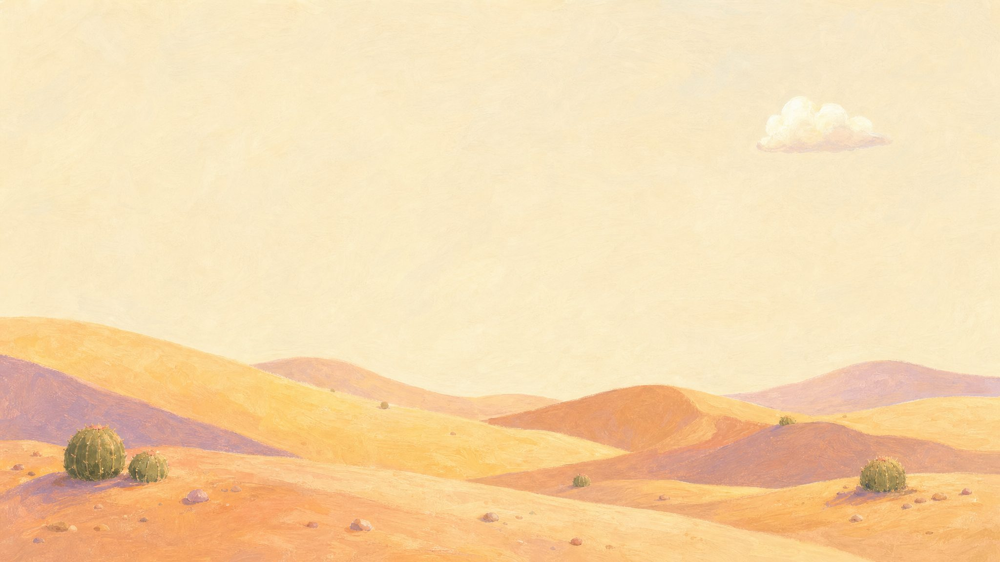

free and open source · macOS 13+
A tiny hand for your Mac.
It points at things on your screen. Click to tap. Hold and drag to draw.
Point
The hand follows your mouse.
Tap
Clicks make a soft tap. Nothing gets clicked.
Draw
Lines fade after 3 seconds.
⌃⌥H turns it on or off. esc puts it away.